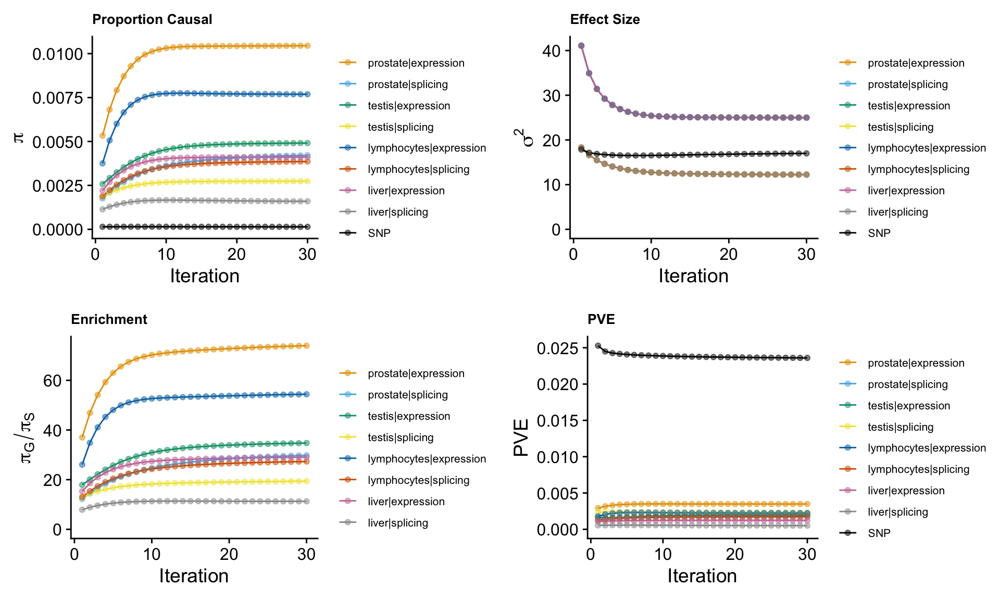
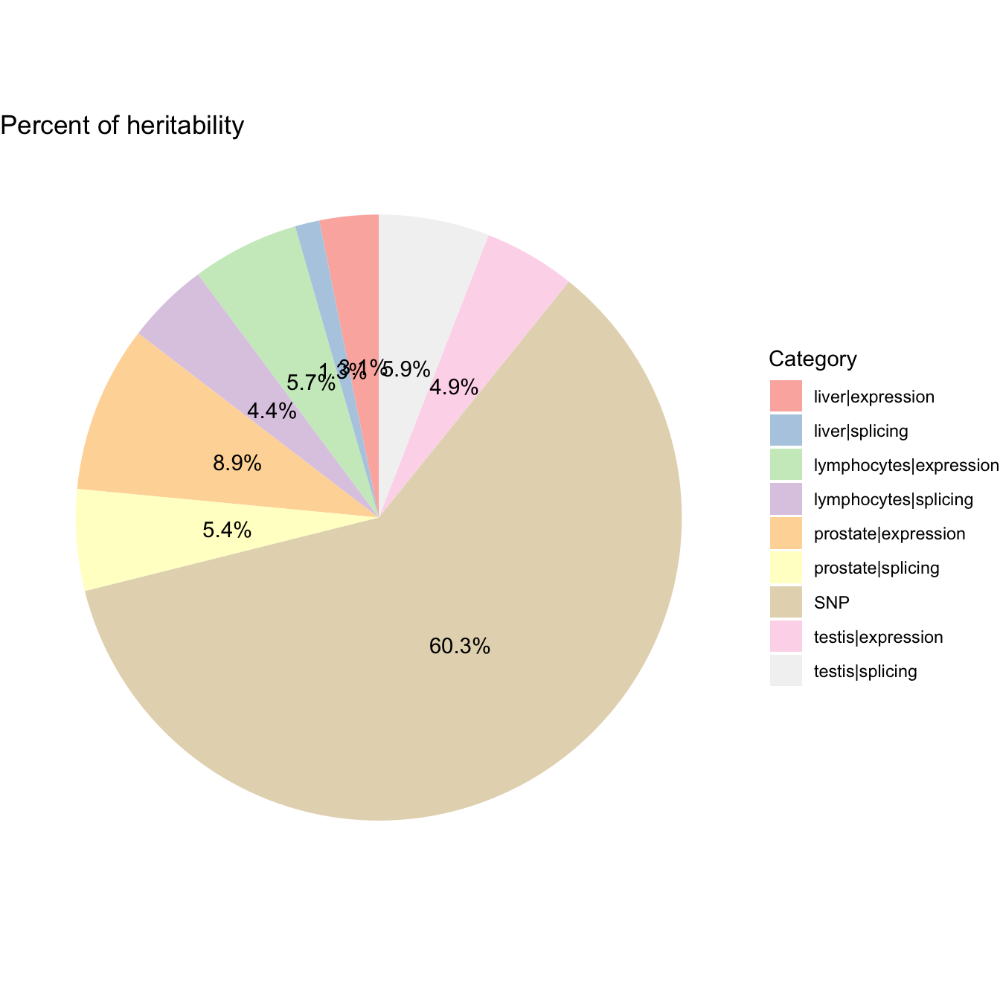
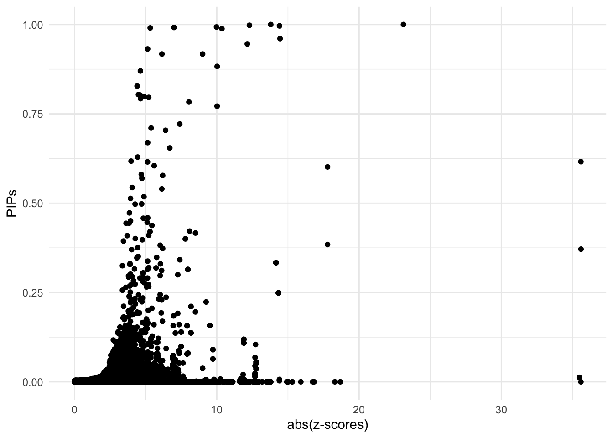

Prostate Cancer ~ Predictdb eQTL&sQTL from Prostate & Testis & Lymphocytes & Liver
Nina Yifan Yang
2024-10-04
Last updated: 2024-10-04
Checks: 7 0
Knit directory: Multigroup_cTWAS/
This reproducible R Markdown analysis was created with workflowr (version 1.7.1). The Checks tab describes the reproducibility checks that were applied when the results were created. The Past versions tab lists the development history.
Great! Since the R Markdown file has been committed to the Git repository, you know the exact version of the code that produced these results.
Great job! The global environment was empty. Objects defined in the global environment can affect the analysis in your R Markdown file in unknown ways. For reproduciblity it’s best to always run the code in an empty environment.
The command set.seed(20241004) was run prior to running
the code in the R Markdown file. Setting a seed ensures that any results
that rely on randomness, e.g. subsampling or permutations, are
reproducible.
Great job! Recording the operating system, R version, and package versions is critical for reproducibility.
Nice! There were no cached chunks for this analysis, so you can be confident that you successfully produced the results during this run.
Great job! Using relative paths to the files within your workflowr project makes it easier to run your code on other machines.
Great! You are using Git for version control. Tracking code development and connecting the code version to the results is critical for reproducibility.
The results in this page were generated with repository version ff7e16c. See the Past versions tab to see a history of the changes made to the R Markdown and HTML files.
Note that you need to be careful to ensure that all relevant files for
the analysis have been committed to Git prior to generating the results
(you can use wflow_publish or
wflow_git_commit). workflowr only checks the R Markdown
file, but you know if there are other scripts or data files that it
depends on. Below is the status of the Git repository when the results
were generated:
Ignored files:
Ignored: .DS_Store
Ignored: .Rhistory
Note that any generated files, e.g. HTML, png, CSS, etc., are not included in this status report because it is ok for generated content to have uncommitted changes.
These are the previous versions of the repository in which changes were
made to the R Markdown
(analysis/cTWAS_noLD_european_prostatetestislymphocytesliver_output.Rmd)
and HTML
(docs/cTWAS_noLD_european_prostatetestislymphocytesliver_output.html)
files. If you’ve configured a remote Git repository (see
?wflow_git_remote), click on the hyperlinks in the table
below to view the files as they were in that past version.
| File | Version | Author | Date | Message |
|---|---|---|---|---|
| Rmd | ff7e16c | yy896 | 2024-10-04 | Add my first analysis |
We present a sample cTWAS report based on real data analysis. The analyzed trait is prostate cancer, the prediction models are Prostate & Testis & Lymphocytes & Liver gene expression and splicing models trained on GTEx v8 in the PredictDB format.
Analysis Settings
Input Data
- GWAS Z-scores
The summary statistics for prostate cancer are downloaded from https://www.ebi.ac.uk/gwas/downloads/summary-statistics, using dataset ID: GCST90274714.
The sample size is
[1] "gwas_n = 726828"- Prediction models
The prediction models used in this analysis are prostate & testis & lymphocytes & liver gene expression and splicing models, trained on GTEx v8 in the PredictDB format. These models can be downloaded from https://predictdb.org/post/2021/07/21/gtex-v8-models-on-eqtl-and-sqtl/
- Reference data
We did not include LD reference in the analysis.
Data processing and harmonization
We map the reference SNPs to regions following the instructions from the cTWAS tutorial.
When processing z-scores, we exclude multi-allelic and
strand-ambiguous variants by setting
drop_multiallelic = TRUE and
drop_strand_ambig = TRUE.
The process can be divided into steps below, users can expand the code snippets below to view the exact code used.
- Input and output settings
weight_prostate_expression_file <- system.file("extdata/project_data",
"mashr_Prostate_e.db", package = "ctwas")
weight_prostate_splicing_file <- system.file("extdata/project_data",
"mashr_Prostate_s.db", package = "ctwas")
weight_testis_expression_file <- system.file("extdata/project_data",
"mashr_Testis_e.db", package = "ctwas")
weight_testis_splicing_file <- system.file("extdata/project_data",
"mashr_Testis_s.db", package = "ctwas")
weight_lymphocytes_expression_file <- system.file("extdata/project_data",
"mashr_Cells_EBV-transformed_lymphocytes_e.db", package = "ctwas")
weight_lymphocytes_splicing_file <- system.file("extdata/project_data",
"mashr_Cells_EBV-transformed_lymphocytes_s.db", package = "ctwas")
weight_liver_expression_file <- system.file("extdata/project_data",
"mashr_Liver_e.db", package = "ctwas")
weight_liver_splicing_file <- system.file("extdata/project_data",
"mashr_Liver_s.db", package = "ctwas")
z_snp <- vroom::vroom("~/Desktop/Prostate Cancer Project/GCST90274714.mod.tsv.gz", col_names = TRUE, show_col_types = FALSE)
z_snp$Z <- z_snp$beta / z_snp$standard_error
z_snp <- z_snp[, c("rsid", "other_allele", "effect_allele", "Z")]
colnames(z_snp) <- c("id", "A1", "A2", "z")
region_file <- system.file("extdata/ldetect", "EUR.b38.ldetect.regions.RDS", package = "ctwas")
region_info <- readRDS(region_file)
## other parameters
ncore <- 6- Preprocessing GWAS
### Preprocess SNP_map
ref_snp_info_file <- system.file("extdata/project_data", "ukb_b38_0.1_var_info.Rvar.gz", package = "ctwas")
ref_snp_info <- data.table::fread(ref_snp_info_file, sep = "\t")
class(ref_snp_info) <- "data.frame"
res <- create_snp_map(region_info, ref_snp_info)
region_info <- res$region_info
snp_map <- res$snp_map
### Preprocess GWAS z-scores
z_snp <- preprocess_z_snp(z_snp, snp_map,
drop_multiallelic = TRUE,
drop_strand_ambig = TRUE)- Preprocessing weights
weights_prostate_expression <- preprocess_weights(weight_prostate_expression_file,
region_info,
gwas_snp_ids = z_snp$id,
snp_map = snp_map,
type = "expression",
context = "prostate",
weight_name = "prostate_expression",
weight_format = "PredictDB",
drop_strand_ambig = TRUE,
scale_predictdb_weights = TRUE,
load_predictdb_LD = TRUE,
filter_protein_coding_genes = TRUE,
ncore = 6)
weights_prostate_splicing <- preprocess_weights(weight_prostate_splicing_file,
region_info,
gwas_snp_ids = z_snp$id,
snp_map = snp_map,
type = "splicing",
context = "prostate",
weight_name = "prostate_splicing",
weight_format = "PredictDB",
drop_strand_ambig = TRUE,
scale_predictdb_weights = TRUE,
load_predictdb_LD = TRUE,
filter_protein_coding_genes = TRUE,
ncore = 6)
weights_testis_expression <- preprocess_weights(weight_testis_expression_file,
region_info,
gwas_snp_ids = z_snp$id,
snp_map = snp_map,
type = "expression",
context = "testis",
weight_name = "testis_expression",
weight_format = "PredictDB",
drop_strand_ambig = TRUE,
scale_predictdb_weights = TRUE,
load_predictdb_LD = TRUE,
filter_protein_coding_genes = TRUE,
ncore = 6)
weights_testis_splicing <- preprocess_weights(weight_testis_splicing_file,
region_info,
gwas_snp_ids = z_snp$id,
snp_map = snp_map,
type = "splicing",
context = "testis",
weight_name = "testis_splicing",
weight_format = "PredictDB",
drop_strand_ambig = TRUE,
scale_predictdb_weights = TRUE,
load_predictdb_LD = TRUE,
filter_protein_coding_genes = TRUE,
ncore = 6)
weights_lymphocytes_expression <- preprocess_weights(weight_lymphocytes_expression_file,
region_info,
gwas_snp_ids = z_snp$id,
snp_map = snp_map,
type = "expression",
context = "lymphocytes",
weight_name = "lymphocytes_expression",
weight_format = "PredictDB",
drop_strand_ambig = TRUE,
scale_predictdb_weights = TRUE,
load_predictdb_LD = TRUE,
filter_protein_coding_genes = TRUE,
ncore = 6)
weights_lymphocytes_splicing <- preprocess_weights(weight_lymphocytes_splicing_file,
region_info,
gwas_snp_ids = z_snp$id,
snp_map = snp_map,
type = "splicing",
context = "lymphocytes",
weight_name = "lymphocytes_splicing",
weight_format = "PredictDB",
drop_strand_ambig = TRUE,
scale_predictdb_weights = TRUE,
load_predictdb_LD = TRUE,
filter_protein_coding_genes = TRUE,
ncore = 6)
weights_liver_expression <- preprocess_weights(weight_liver_expression_file,
region_info,
gwas_snp_ids = z_snp$id,
snp_map = snp_map,
type = "expression",
context = "liver",
weight_name = "liver_expression",
weight_format = "PredictDB",
drop_strand_ambig = TRUE,
scale_predictdb_weights = TRUE,
load_predictdb_LD = TRUE,
filter_protein_coding_genes = TRUE,
ncore = 6)
weights_liver_splicing <- preprocess_weights(weight_liver_splicing_file,
region_info,
gwas_snp_ids = z_snp$id,
snp_map = snp_map,
type = "splicing",
context = "liver",
weight_name = "liver_splicing",
weight_format = "PredictDB",
drop_strand_ambig = TRUE,
scale_predictdb_weights = TRUE,
load_predictdb_LD = TRUE,
filter_protein_coding_genes = TRUE,
ncore = 6)
weights <- c(
weights_prostate_expression,
weights_prostate_splicing,
weights_testis_expression,
weights_testis_splicing,
weights_lymphocytes_expression,
weights_lymphocytes_splicing,
weights_liver_expression,
weights_liver_splicing)Running cTWAS analysis
We use the ctwas main function ctwas_sumstats_noLD to
run the cTWAS analysis without LD. For more details on this function,
refer to the cTWAS tutorial: https://xinhe-lab.github.io/multigroup_ctwas/articles/minimal_tutorial.html
All arguments are set to their default values.
Users can expand the code snippets below to view the exact code used.
ctwas_res <- ctwas_sumstats_noLD(z_snp,
weights,
region_info,
snp_map,
thin = 0.1,
ncore = 6)Parameter estimation
ctwas_res is the object contains the outputs of
cTWAS
We extract the estimated parameters by
param <- ctwas_res$param
We make plots using the function
make_convergence_plots(param, gwas_n) to see how estimated
parameters converge during the execution of the program:

These plots show the estimated prior inclusion probability, prior effect size variance, enrichment and proportion of variance explained (PVE) over the iterations of parameter estimation. The enrichment is defined as the ratio of the prior inclusion probability of molecular traits over the prior inclusion probability of variants. We generally expect molecular traits to have higher prior inclusion probability than variants. Enrichment values typically range from 20 - 100 for expression traits.
Then, we use summarize_param(param, gwas_n) to obtain
estimated parameters (from the last iteration) and to compute the PVE by
variants and molecular traits.
[1] "The number of genes/introns/SNPs used in the analysis is:" prostate|expression prostate|splicing testis|expression
9693 29875 11361
testis|splicing lymphocytes|expression lymphocytes|splicing
50036 8478 26609
liver|expression liver|splicing SNP
8721 19025 7146350 ctwas_parameters$attributable_pve contains the
proportion of heritability mediated by molecular traits and variants, we
visualize it using pie chart.
ctwas_parameters <- summarize_param(param, gwas_n)
data <- data.frame(
category = names(ctwas_parameters$attributable_pve),
percentage = ctwas_parameters$attributable_pve
)
# Calculate percentage labels for the chart
data$percentage_label <- paste0(round(data$percentage * 100, 1), "%")
ggplot(data, aes(x = "", y = percentage, fill = category)) +
geom_bar(stat = "identity", width = 1) +
coord_polar("y", start = 0) +
theme_void() + # Remove background and axes
geom_text(aes(label = percentage_label),
position = position_stack(vjust = 0.5)) +
scale_fill_brewer(palette = "Pastel1") +
labs(fill = "Category") +
ggtitle("Percent of heritability")
Diagnosis plots
For all genes analyzed, we compare the z-scores and fine-mapping PIPs”
ggplot(data = finemap_res[finemap_res$type!="SNP",], aes(x = abs(z), y = susie_pip)) +
geom_point() +
labs(x = "abs(z-scores)", y = "PIPs") +
theme_minimal()
Fine-mapping results
We process the fine-mapping results here.
We first add gene annotations to cTWAS results.
mapping_table is the combination of both expression and
splicing data.
finemap_res <- anno_finemap_res(finemap_res,
snp_map = snp_map,
mapping_table = mapping_table,
add_gene_annot = TRUE,
map_by = "molecular_id",
drop_unmapped = TRUE,
add_position = TRUE,
use_gene_pos = "mid")The annotated fine-mapping results, ones within credible sets are shown
Next, we compute gene PIPs across different types of molecular traits.
Combined PIPs
library(dplyr)
combined_pip_by_group <- combine_gene_pips(finemap_res,
group_by = "gene_name",
by = "group",
method = "combine_cs",
filter_cs = TRUE)2024-10-04 19:24:12.18368 INFO::Limit gene results to credible setscombined_pip_table <- subset(combined_pip_by_group, combined_pip > 0.8)
DT::datatable(combined_pip_table)Locus plots (from highest PIP to lowest 0.8 cutoff)
make_locusplot(finemap_res,
region_id = "20_34225635_36332043",
ens_db = ens_db,
weights = weights,
highlight_pip = 0.8,
filter_protein_coding_genes = TRUE,
filter_cs = TRUE,
color_pval_by = "cs",
color_pip_by = "cs")2024-10-04 19:24:12.751691 INFO::Limit to protein coding genes
2024-10-04 19:24:12.755841 INFO::focal id: ENSG00000126001.15|testis_expression
2024-10-04 19:24:12.756133 INFO::focal molecular trait: CEP250 testis expression
2024-10-04 19:24:12.756405 INFO::Range of locus: chr20:34225783-36417586chromosome 20, position 34225783 to 364175864786 SNPs/datapoints2024-10-04 19:24:12.85557 INFO::focal molecular trait QTL positions: 35445740,35454222,35456125
2024-10-04 19:24:12.869946 INFO::Limit PIPs to credible setsWarning: ggrepel: 1348 unlabeled data points (too many overlaps). Consider
increasing max.overlaps
make_locusplot(finemap_res,
region_id = "2_240620667_241210506",
ens_db = ens_db,
weights = weights,
highlight_pip = 0.8,
filter_protein_coding_genes = TRUE,
filter_cs = TRUE,
color_pval_by = "cs",
color_pip_by = "cs")2024-10-04 19:24:14.735453 INFO::Limit to protein coding genes
2024-10-04 19:24:14.736076 INFO::focal id: intron_2_241195845_241199316|prostate_splicing
2024-10-04 19:24:14.736311 INFO::focal molecular trait: ANO7 prostate splicing
2024-10-04 19:24:14.73657 INFO::Range of locus: chr2:240618245-241608572chromosome 2, position 240618245 to 2416085722257 SNPs/datapoints2024-10-04 19:24:14.833509 INFO::focal molecular trait QTL positions: 241195850,241202304
2024-10-04 19:24:14.846372 INFO::Limit PIPs to credible setsWarning: ggrepel: 299 unlabeled data points (too many overlaps). Consider
increasing max.overlaps
make_locusplot(finemap_res,
region_id = "11_101460390_104088908",
ens_db = ens_db,
weights = weights,
highlight_pip = 0.8,
filter_protein_coding_genes = TRUE,
filter_cs = TRUE,
color_pval_by = "cs",
color_pip_by = "cs")2024-10-04 19:24:15.740076 INFO::Limit to protein coding genes
2024-10-04 19:24:15.740778 INFO::focal id: ENSG00000137673.8|liver_expression
2024-10-04 19:24:15.741096 INFO::focal molecular trait: MMP7 liver expression
2024-10-04 19:24:15.7414 INFO::Range of locus: chr11:101460301-104087928chromosome 11, position 101460301 to 1040879288471 SNPs/datapoints2024-10-04 19:24:15.796286 INFO::focal molecular trait QTL positions: 102530902,102530930
2024-10-04 19:24:15.809926 INFO::Limit PIPs to credible setsWarning: ggrepel: 120 unlabeled data points (too many overlaps). Consider
increasing max.overlaps
make_locusplot(finemap_res,
region_id = "17_150263_1269105",
ens_db = ens_db,
weights = weights,
highlight_pip = 0.8,
filter_protein_coding_genes = TRUE,
filter_cs = TRUE,
color_pval_by = "cs",
color_pip_by = "cs")2024-10-04 19:24:16.559957 INFO::Limit to protein coding genes
2024-10-04 19:24:16.560558 INFO::focal id: ENSG00000179409.10|prostate_expression
2024-10-04 19:24:16.560805 INFO::focal molecular trait: GEMIN4 prostate expression
2024-10-04 19:24:16.561073 INFO::Range of locus: chr17:150409-1727661chromosome 17, position 150409 to 17276614375 SNPs/datapoints2024-10-04 19:24:16.615358 INFO::focal molecular trait QTL positions: 715725
2024-10-04 19:24:16.628774 INFO::Limit PIPs to credible setsWarning: ggrepel: 268 unlabeled data points (too many overlaps). Consider
increasing max.overlaps
make_locusplot(finemap_res,
region_id = "11_124625632_126441425",
ens_db = ens_db,
weights = weights,
highlight_pip = 0.8,
filter_protein_coding_genes = TRUE,
filter_cs = TRUE,
color_pval_by = "cs",
color_pip_by = "cs")2024-10-04 19:24:17.479519 INFO::Limit to protein coding genes
2024-10-04 19:24:17.480196 INFO::focal id: ENSG00000165495.15|prostate_expression
2024-10-04 19:24:17.48047 INFO::focal molecular trait: PKNOX2 prostate expression
2024-10-04 19:24:17.480758 INFO::Range of locus: chr11:124627414-126441118chromosome 11, position 124627414 to 1264411185734 SNPs/datapoints2024-10-04 19:24:17.537154 INFO::focal molecular trait QTL positions: 125184897
2024-10-04 19:24:17.550588 INFO::Limit PIPs to credible setsWarning: ggrepel: 749 unlabeled data points (too many overlaps). Consider
increasing max.overlaps
make_locusplot(finemap_res,
region_id = "16_84412277_85115079",
ens_db = ens_db,
weights = weights,
highlight_pip = 0.8,
filter_protein_coding_genes = TRUE,
filter_cs = TRUE,
color_pval_by = "cs",
color_pip_by = "cs")2024-10-04 19:24:18.828637 INFO::Limit to protein coding genes
2024-10-04 19:24:18.82923 INFO::focal id: ENSG00000153786.12|prostate_expression
2024-10-04 19:24:18.82947 INFO::focal molecular trait: ZDHHC7 prostate expression
2024-10-04 19:24:18.82973 INFO::Range of locus: chr16:84412178-85114834chromosome 16, position 84412178 to 851148343522 SNPs/datapoints2024-10-04 19:24:18.876848 INFO::focal molecular trait QTL positions: 85011497,85011520,85018213
2024-10-04 19:24:18.88984 INFO::Limit PIPs to credible setsWarning: ggrepel: 221 unlabeled data points (too many overlaps). Consider
increasing max.overlaps
make_locusplot(finemap_res,
region_id = "19_54099074_55216712",
ens_db = ens_db,
weights = weights,
highlight_pip = 0.8,
filter_protein_coding_genes = TRUE,
filter_cs = TRUE,
color_pval_by = "cs",
color_pip_by = "cs")2024-10-04 19:24:19.693883 INFO::Limit to protein coding genes
2024-10-04 19:24:19.694537 INFO::focal id: ENSG00000170892.10|testis_expression
2024-10-04 19:24:19.694789 INFO::focal molecular trait: TSEN34 testis expression
2024-10-04 19:24:19.695053 INFO::Range of locus: chr19:54098580-55244488chromosome 19, position 54098580 to 552444884322 SNPs/datapoints2024-10-04 19:24:19.780383 INFO::focal molecular trait QTL positions: 54189591,54190017
2024-10-04 19:24:19.793979 INFO::Limit PIPs to credible setsWarning: ggrepel: 573 unlabeled data points (too many overlaps). Consider
increasing max.overlaps
make_locusplot(finemap_res,
region_id = "2_236540389_237852338",
ens_db = ens_db,
weights = weights,
highlight_pip = 0.8,
filter_protein_coding_genes = TRUE,
filter_cs = TRUE,
color_pval_by = "cs",
color_pip_by = "cs")2024-10-04 19:24:20.997701 INFO::Limit to protein coding genes
2024-10-04 19:24:20.998308 INFO::focal id: ENSG00000115648.13|lymphocytes_expression
2024-10-04 19:24:20.998558 INFO::focal molecular trait: MLPH lymphocytes expression
2024-10-04 19:24:20.998827 INFO::Range of locus: chr2:236541810-237851575chromosome 2, position 236541810 to 2378515754295 SNPs/datapoints2024-10-04 19:24:21.051276 INFO::focal molecular trait QTL positions: 237484645,237484791
2024-10-04 19:24:21.064094 INFO::Limit PIPs to credible setsWarning: ggrepel: 218 unlabeled data points (too many overlaps). Consider
increasing max.overlaps
make_locusplot(finemap_res,
region_id = "1_203365606_204711940",
ens_db = ens_db,
weights = weights,
highlight_pip = 0.8,
filter_protein_coding_genes = TRUE,
filter_cs = TRUE,
color_pval_by = "cs",
color_pip_by = "cs")2024-10-04 19:24:21.78954 INFO::Limit to protein coding genes
2024-10-04 19:24:21.790129 INFO::focal id: ENSG00000133056.13|lymphocytes_expression
2024-10-04 19:24:21.790383 INFO::focal molecular trait: PIK3C2B lymphocytes expression
2024-10-04 19:24:21.790654 INFO::Range of locus: chr1:203181224-204711982chromosome 1, position 203181224 to 2047119823676 SNPs/datapoints2024-10-04 19:24:21.847713 INFO::focal molecular trait QTL positions: 204495053
2024-10-04 19:24:21.860612 INFO::Limit PIPs to credible setsWarning: ggrepel: 207 unlabeled data points (too many overlaps). Consider
increasing max.overlaps
make_locusplot(finemap_res,
region_id = "1_153208353_154797927",
ens_db = ens_db,
weights = weights,
highlight_pip = 0.8,
filter_protein_coding_genes = TRUE,
filter_cs = TRUE,
color_pval_by = "cs",
color_pip_by = "cs")2024-10-04 19:24:22.661915 INFO::Limit to protein coding genes
2024-10-04 19:24:22.662574 INFO::focal id: ENSG00000143545.8|lymphocytes_expression
2024-10-04 19:24:22.662827 INFO::focal molecular trait: RAB13 lymphocytes expression
2024-10-04 19:24:22.663098 INFO::Range of locus: chr1:153208786-154797763chromosome 1, position 153208786 to 1547977633850 SNPs/datapoints2024-10-04 19:24:22.724973 INFO::focal molecular trait QTL positions: 153985724,153989308
2024-10-04 19:24:22.737925 INFO::Limit PIPs to credible setsWarning: ggrepel: 644 unlabeled data points (too many overlaps). Consider
increasing max.overlaps
make_locusplot(finemap_res,
region_id = "19_46646825_48778970",
ens_db = ens_db,
weights = weights,
highlight_pip = 0.8,
filter_protein_coding_genes = TRUE,
filter_cs = TRUE,
color_pval_by = "cs",
color_pip_by = "cs")2024-10-04 19:24:24.106614 INFO::Limit to protein coding genes
2024-10-04 19:24:24.107364 INFO::focal id: ENSG00000105327.17|prostate_expression
2024-10-04 19:24:24.107663 INFO::focal molecular trait: BBC3 prostate expression
2024-10-04 19:24:24.107956 INFO::Range of locus: chr19:46646725-48778681chromosome 19, position 46646725 to 487786816863 SNPs/datapoints2024-10-04 19:24:24.169515 INFO::focal molecular trait QTL positions: 47232618
2024-10-04 19:24:24.182462 INFO::Limit PIPs to credible setsWarning: ggrepel: 1018 unlabeled data points (too many overlaps). Consider
increasing max.overlaps
make_locusplot(finemap_res,
region_id = "22_17813322_19924835",
ens_db = ens_db,
weights = weights,
highlight_pip = 0.8,
filter_protein_coding_genes = TRUE,
filter_cs = TRUE,
color_pval_by = "cs",
color_pip_by = "cs")2024-10-04 19:24:25.940227 INFO::Limit to protein coding genes
2024-10-04 19:24:25.940798 INFO::focal id: ENSG00000184058.12|prostate_expression
2024-10-04 19:24:25.941054 INFO::focal molecular trait: TBX1 prostate expression
2024-10-04 19:24:25.941323 INFO::Range of locus: chr22:17813372-19925414chromosome 22, position 17813372 to 199254144833 SNPs/datapoints2024-10-04 19:24:25.990777 INFO::focal molecular trait QTL positions: 19762002
2024-10-04 19:24:26.003755 INFO::Limit PIPs to credible setsWarning: ggrepel: 356 unlabeled data points (too many overlaps). Consider
increasing max.overlaps
make_locusplot(finemap_res,
region_id = "20_33027017_34225635",
ens_db = ens_db,
weights = weights,
highlight_pip = 0.8,
filter_protein_coding_genes = TRUE,
filter_cs = TRUE,
color_pval_by = "cs",
color_pip_by = "cs")2024-10-04 19:24:27.035163 INFO::Limit to protein coding genes
2024-10-04 19:24:27.035714 INFO::focal id: ENSG00000101417.11|lymphocytes_expression
2024-10-04 19:24:27.035943 INFO::focal molecular trait: PXMP4 lymphocytes expression
2024-10-04 19:24:27.036197 INFO::Range of locus: chr20:33027532-34224952chromosome 20, position 33027532 to 342249522014 SNPs/datapoints2024-10-04 19:24:27.083679 INFO::focal molecular trait QTL positions: 33720469
2024-10-04 19:24:27.097137 INFO::Limit PIPs to credible setsWarning: ggrepel: 187 unlabeled data points (too many overlaps). Consider
increasing max.overlaps
make_locusplot(finemap_res,
region_id = "10_101189482_102620653",
ens_db = ens_db,
weights = weights,
highlight_pip = 0.8,
filter_protein_coding_genes = TRUE,
filter_cs = TRUE,
color_pval_by = "cs",
color_pip_by = "cs")2024-10-04 19:24:27.860948 INFO::Limit to protein coding genes
2024-10-04 19:24:27.861576 INFO::focal id: ENSG00000138111.14|prostate_expression
2024-10-04 19:24:27.861826 INFO::focal molecular trait: MFSD13A prostate expression
2024-10-04 19:24:27.862095 INFO::Range of locus: chr10:101190250-102621720chromosome 10, position 101190250 to 1026217202910 SNPs/datapoints2024-10-04 19:24:27.912438 INFO::focal molecular trait QTL positions: 102462097,102463206,102466080
2024-10-04 19:24:28.103868 INFO::Limit PIPs to credible setsWarning: ggrepel: 588 unlabeled data points (too many overlaps). Consider
increasing max.overlaps
make_locusplot(finemap_res,
region_id = "1_37083582_38266175",
ens_db = ens_db,
weights = weights,
highlight_pip = 0.8,
filter_protein_coding_genes = TRUE,
filter_cs = TRUE,
color_pval_by = "cs",
color_pip_by = "cs")2024-10-04 19:24:29.093061 INFO::Limit to protein coding genes
2024-10-04 19:24:29.093665 INFO::focal id: ENSG00000163874.10|prostate_expression
2024-10-04 19:24:29.09391 INFO::focal molecular trait: ZC3H12A prostate expression
2024-10-04 19:24:29.094169 INFO::Range of locus: chr1:37083938-38266050chromosome 1, position 37083938 to 382660503178 SNPs/datapoints2024-10-04 19:24:29.155236 INFO::focal molecular trait QTL positions: 37475037,37499397
2024-10-04 19:24:29.168749 INFO::Limit PIPs to credible setsWarning: ggrepel: 341 unlabeled data points (too many overlaps). Consider
increasing max.overlapsWarning: ggrepel: 90 unlabeled data points (too many overlaps). Consider
increasing max.overlaps
make_locusplot(finemap_res,
region_id = "12_11601912_12580594",
ens_db = ens_db,
weights = weights,
highlight_pip = 0.8,
filter_protein_coding_genes = TRUE,
filter_cs = TRUE,
color_pval_by = "cs",
color_pip_by = "cs")2024-10-04 19:24:30.322651 INFO::Limit to protein coding genes
2024-10-04 19:24:30.323225 INFO::focal id: ENSG00000121380.12|prostate_expression
2024-10-04 19:24:30.323466 INFO::focal molecular trait: BCL2L14 prostate expression
2024-10-04 19:24:30.32373 INFO::Range of locus: chr12:11034257-12580271chromosome 12, position 11034257 to 125802712933 SNPs/datapoints2024-10-04 19:24:30.3797 INFO::focal molecular trait QTL positions: 12052195,12052348
2024-10-04 19:24:30.392791 INFO::Limit PIPs to credible setsWarning: ggrepel: 98 unlabeled data points (too many overlaps). Consider
increasing max.overlaps
sessionInfo()R version 4.4.1 (2024-06-14)
Platform: aarch64-apple-darwin20
Running under: macOS 15.0.1
Matrix products: default
BLAS: /Library/Frameworks/R.framework/Versions/4.4-arm64/Resources/lib/libRblas.0.dylib
LAPACK: /Library/Frameworks/R.framework/Versions/4.4-arm64/Resources/lib/libRlapack.dylib; LAPACK version 3.12.0
locale:
[1] en_US.UTF-8/en_US.UTF-8/en_US.UTF-8/C/en_US.UTF-8/en_US.UTF-8
time zone: America/New_York
tzcode source: internal
attached base packages:
[1] stats4 stats graphics grDevices utils datasets methods
[8] base
other attached packages:
[1] see_0.9.0 data.table_1.16.0
[3] lubridate_1.9.3 forcats_1.0.0
[5] stringr_1.5.1 dplyr_1.1.4
[7] purrr_1.0.2 tidyr_1.3.1
[9] tibble_3.2.1 tidyverse_2.0.0
[11] ggrepel_0.9.6 ggplot2_3.5.1
[13] EnsDb.Hsapiens.v86_2.99.0 ensembldb_2.28.1
[15] AnnotationFilter_1.28.0 GenomicFeatures_1.56.0
[17] AnnotationDbi_1.66.0 Biobase_2.64.0
[19] GenomicRanges_1.56.1 GenomeInfoDb_1.40.1
[21] IRanges_2.38.1 S4Vectors_0.42.1
[23] BiocGenerics_0.50.0 ctwas_0.4.14
[25] readr_2.1.5 workflowr_1.7.1
loaded via a namespace (and not attached):
[1] RColorBrewer_1.1-3 rstudioapi_0.16.0
[3] jsonlite_1.8.9 magrittr_2.0.3
[5] farver_2.1.2 rmarkdown_2.28
[7] fs_1.6.4 BiocIO_1.14.0
[9] zlibbioc_1.50.0 vctrs_0.6.5
[11] memoise_2.0.1 Rsamtools_2.20.0
[13] RCurl_1.98-1.16 mixsqp_0.3-54
[15] htmltools_0.5.8.1 S4Arrays_1.4.1
[17] curl_5.2.3 SparseArray_1.4.8
[19] sass_0.4.9 bslib_0.8.0
[21] htmlwidgets_1.6.4 plotly_4.10.4
[23] zoo_1.8-12 cachem_1.1.0
[25] gggrid_0.2-0 GenomicAlignments_1.40.0
[27] whisker_0.4.1 lifecycle_1.0.4
[29] pkgconfig_2.0.3 Matrix_1.7-0
[31] R6_2.5.1 fastmap_1.2.0
[33] GenomeInfoDbData_1.2.12 MatrixGenerics_1.16.0
[35] digest_0.6.37 colorspace_2.1-1
[37] ps_1.8.0 rprojroot_2.0.4
[39] irlba_2.3.5.1 crosstalk_1.2.1
[41] RSQLite_2.3.7 labeling_0.4.3
[43] pgenlibr_0.3.7 timechange_0.3.0
[45] fansi_1.0.6 httr_1.4.7
[47] abind_1.4-8 compiler_4.4.1
[49] bit64_4.0.5 withr_3.0.1
[51] BiocParallel_1.38.0 DBI_1.2.3
[53] highr_0.11 DelayedArray_0.30.1
[55] rjson_0.2.23 tools_4.4.1
[57] httpuv_1.6.15 glue_1.7.0
[59] restfulr_0.0.15 callr_3.7.6
[61] promises_1.3.0 grid_4.4.1
[63] getPass_0.2-4 generics_0.1.3
[65] LDlinkR_1.4.0 gtable_0.3.5
[67] tzdb_0.4.0 locuszoomr_0.3.5
[69] hms_1.1.3 utf8_1.2.4
[71] XVector_0.44.0 pillar_1.9.0
[73] later_1.3.2 logging_0.10-108
[75] lattice_0.22-6 rtracklayer_1.64.0
[77] bit_4.5.0 tidyselect_1.2.1
[79] Biostrings_2.72.1 knitr_1.48
[81] git2r_0.33.0.9000 ProtGenerics_1.36.0
[83] SummarizedExperiment_1.34.0 xfun_0.47
[85] matrixStats_1.4.1 DT_0.33
[87] stringi_1.8.4 UCSC.utils_1.0.0
[89] lazyeval_0.2.2 yaml_2.3.10
[91] evaluate_1.0.0 codetools_0.2-20
[93] cli_3.6.3 munsell_0.5.1
[95] processx_3.8.4 jquerylib_0.1.4
[97] Rcpp_1.0.13 png_0.1-8
[99] XML_3.99-0.17 parallel_4.4.1
[101] blob_1.2.4 bitops_1.0-8
[103] viridisLite_0.4.2 scales_1.3.0
[105] crayon_1.5.3 rlang_1.1.4
[107] cowplot_1.1.3 KEGGREST_1.44.1